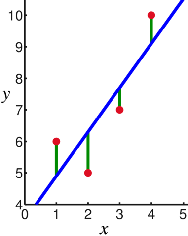

import matplotlib.pyplot as plt
import numpy as np
import pandas as pd
import plotly.express as pxPython LevelUP: Data Science by Appsilon
Week 4 - Machine learning - scikit-learn
1 Training the first ML model
We got the introduction. Now we should dp the hands-on experiments!
We will work with an interesting dataset on Life Expectancy from WHO. Our task will be to predict the Life expectancy based on other columns.
df = pd.read_csv("../data/Life Expectancy Data.csv")
df| Country | Year | Status | Life expectancy | Adult Mortality | infant deaths | Alcohol | percentage expenditure | Hepatitis B | Measles | ... | Polio | Total expenditure | Diphtheria | HIV/AIDS | GDP | Population | thinness 1-19 years | thinness 5-9 years | Income composition of resources | Schooling | |
|---|---|---|---|---|---|---|---|---|---|---|---|---|---|---|---|---|---|---|---|---|---|
| 0 | Afghanistan | 2015 | Developing | 65.0 | 263.0 | 62 | 0.01 | 71.279624 | 65.0 | 1154 | ... | 6.0 | 8.16 | 65.0 | 0.1 | 584.259210 | 33736494.0 | 17.2 | 17.3 | 0.479 | 10.1 |
| 1 | Afghanistan | 2014 | Developing | 59.9 | 271.0 | 64 | 0.01 | 73.523582 | 62.0 | 492 | ... | 58.0 | 8.18 | 62.0 | 0.1 | 612.696514 | 327582.0 | 17.5 | 17.5 | 0.476 | 10.0 |
| 2 | Afghanistan | 2013 | Developing | 59.9 | 268.0 | 66 | 0.01 | 73.219243 | 64.0 | 430 | ... | 62.0 | 8.13 | 64.0 | 0.1 | 631.744976 | 31731688.0 | 17.7 | 17.7 | 0.470 | 9.9 |
| 3 | Afghanistan | 2012 | Developing | 59.5 | 272.0 | 69 | 0.01 | 78.184215 | 67.0 | 2787 | ... | 67.0 | 8.52 | 67.0 | 0.1 | 669.959000 | 3696958.0 | 17.9 | 18.0 | 0.463 | 9.8 |
| 4 | Afghanistan | 2011 | Developing | 59.2 | 275.0 | 71 | 0.01 | 7.097109 | 68.0 | 3013 | ... | 68.0 | 7.87 | 68.0 | 0.1 | 63.537231 | 2978599.0 | 18.2 | 18.2 | 0.454 | 9.5 |
| ... | ... | ... | ... | ... | ... | ... | ... | ... | ... | ... | ... | ... | ... | ... | ... | ... | ... | ... | ... | ... | ... |
| 2933 | Zimbabwe | 2004 | Developing | 44.3 | 723.0 | 27 | 4.36 | 0.000000 | 68.0 | 31 | ... | 67.0 | 7.13 | 65.0 | 33.6 | 454.366654 | 12777511.0 | 9.4 | 9.4 | 0.407 | 9.2 |
| 2934 | Zimbabwe | 2003 | Developing | 44.5 | 715.0 | 26 | 4.06 | 0.000000 | 7.0 | 998 | ... | 7.0 | 6.52 | 68.0 | 36.7 | 453.351155 | 12633897.0 | 9.8 | 9.9 | 0.418 | 9.5 |
| 2935 | Zimbabwe | 2002 | Developing | 44.8 | 73.0 | 25 | 4.43 | 0.000000 | 73.0 | 304 | ... | 73.0 | 6.53 | 71.0 | 39.8 | 57.348340 | 125525.0 | 1.2 | 1.3 | 0.427 | 10.0 |
| 2936 | Zimbabwe | 2001 | Developing | 45.3 | 686.0 | 25 | 1.72 | 0.000000 | 76.0 | 529 | ... | 76.0 | 6.16 | 75.0 | 42.1 | 548.587312 | 12366165.0 | 1.6 | 1.7 | 0.427 | 9.8 |
| 2937 | Zimbabwe | 2000 | Developing | 46.0 | 665.0 | 24 | 1.68 | 0.000000 | 79.0 | 1483 | ... | 78.0 | 7.10 | 78.0 | 43.5 | 547.358878 | 12222251.0 | 11.0 | 11.2 | 0.434 | 9.8 |
2938 rows × 22 columns
df.info()<class 'pandas.core.frame.DataFrame'>
RangeIndex: 2938 entries, 0 to 2937
Data columns (total 22 columns):
# Column Non-Null Count Dtype
--- ------ -------------- -----
0 Country 2938 non-null object
1 Year 2938 non-null int64
2 Status 2938 non-null object
3 Life expectancy 2928 non-null float64
4 Adult Mortality 2928 non-null float64
5 infant deaths 2938 non-null int64
6 Alcohol 2744 non-null float64
7 percentage expenditure 2938 non-null float64
8 Hepatitis B 2385 non-null float64
9 Measles 2938 non-null int64
10 BMI 2904 non-null float64
11 under-five deaths 2938 non-null int64
12 Polio 2919 non-null float64
13 Total expenditure 2712 non-null float64
14 Diphtheria 2919 non-null float64
15 HIV/AIDS 2938 non-null float64
16 GDP 2490 non-null float64
17 Population 2286 non-null float64
18 thinness 1-19 years 2904 non-null float64
19 thinness 5-9 years 2904 non-null float64
20 Income composition of resources 2771 non-null float64
21 Schooling 2775 non-null float64
dtypes: float64(16), int64(4), object(2)
memory usage: 505.1+ KBWe have some NA in Life expectancy, we must drop them since it doesn’t make sense to create model without a target.
df = df.loc[~df['Life expectancy'].isna(), :]We see some NA, some and Country and Status columns are strings. Let’s drop all of them for now and divide data into X and y. Then, divide into train and test.
from sklearn.model_selection import train_test_split
df2 = df.dropna().drop(columns=["Country", "Status"])
X = df2.drop(columns=['Life expectancy'])
y = df2['Life expectancy']
X_train, X_test, y_train, y_test = train_test_split(X, y, random_state=42)And train the linear regression model!
from sklearn.linear_model import LinearRegressionmodel = LinearRegression()
model.fit(X_train, y_train)LinearRegression()We have model trained, now it’s time to assess it’s performance!
from sklearn.metrics import mean_squared_error, mean_absolute_error
y_pred = model.predict(X_test)
print("Model on all variables without NA")
print(f"Model MSE: {mean_squared_error(y_test, y_pred)}")
print(f"Model RMSE: {np.sqrt(mean_squared_error(y_test, y_pred))}")
print(f"Model MAE: {mean_absolute_error(y_test, y_pred)}")Model on all variables without NA
Model MSE: 13.516706224527082
Model RMSE: 3.6765073404696316
Model MAE: 2.7898832159755824Is it good, is it bad? Good question, we could compare with model build only on one variable. Adult Mortality seems like a reasonable choice.
X = df2[['Adult Mortality']] # since X is supposed to be a dataframe/matrix, we must index it this way
y = df2['Life expectancy']
X_train, X_test, y_train, y_test = train_test_split(X, y, random_state=42)
model = LinearRegression()
model.fit(X_train, y_train)
y_pred = model.predict(X_test)
print("Model on Adult Mortality variable")
print(f"Model MSE: {mean_squared_error(y_test, y_pred)}")
print(f"Model RMSE: {np.sqrt(mean_squared_error(y_test, y_pred))}")
print(f"Model MAD: {mean_absolute_error(y_test, y_pred)}")Model on Adult Mortality variable
Model MSE: 37.877043036044356
Model RMSE: 6.154432795639607
Model MAD: 4.480029140229395Ok, so the model is a bit worse.
1.1 Improving the model by filing NA values
Not so fast, we cannot use the fillna method! Why?
We will leak the information from test set to training set. We should find the mean value on training set and then use it on test set.
from sklearn.impute import SimpleImputerdf3 = df.drop(columns=["Country", "Status"])
X = df3.drop(columns=['Life expectancy'])
y = df3['Life expectancy']
X_train, X_test, y_train, y_test = train_test_split(X, y, random_state=42)imputer = SimpleImputer(strategy="median")
X_train = imputer.fit_transform(X_train)
X_test = imputer.transform(X_test)And train the model:
model = LinearRegression()
model.fit(X_train, y_train)
y_pred = model.predict(X_test)
print("Model on one variable")
print(f"Model MSE: {mean_squared_error(y_test, y_pred)}")
print(f"Model RMSE: {np.sqrt(mean_squared_error(y_test, y_pred))}")
print(f"Model MAD: {mean_absolute_error(y_test, y_pred)}")Model on one variable
Model MSE: 16.530838394594234
Model RMSE: 4.0658133742947715
Model MAD: 2.9909115543265457One could say it wasn’t helpful. But now we are able to handle data with missing values! Maybe production data will also contain some NAs from time to time? Then working on data with dropped NA not be reasonable at all!
Now we can check the impact of changing the Status feature into one-hot.
df['Status'].value_counts()Developing 2416
Developed 512
Name: Status, dtype: int64df4 = df.drop(columns="Country").dropna()
df4 = pd.concat(
[
pd.get_dummies(df4['Status']),
df4.drop(columns="Status")
], axis=1
)
X = df4.drop(columns=['Life expectancy'])
y = df4['Life expectancy']
X_train, X_test, y_train, y_test = train_test_split(X, y, random_state=42)model = LinearRegression()
model.fit(X_train, y_train)
y_pred = model.predict(X_test)
print("Model on one variable")
print(f"Model MSE: {mean_squared_error(y_test, y_pred)}")
print(f"Model RMSE: {np.sqrt(mean_squared_error(y_test, y_pred))}")
print(f"Model MAD: {mean_absolute_error(y_test, y_pred)}")Model on one variable
Model MSE: 13.452498779043589
Model RMSE: 3.667764820574458
Model MAD: 2.7930094149645863It’s hard to say whether we improved the model or is it just a fluctuation.
2 How does linear regression work?
First let’s explore a 2D case.
df.plot(x='Adult Mortality', y='Life expectancy', kind='scatter')<AxesSubplot:xlabel='Adult Mortality', ylabel='Life expectancy'>
We can hold on with linear regression for a second since we immediately see something interesting! There are at least two paths.
px.scatter(df, x='Adult Mortality', y='Life expectancy', color='Country')Unable to display output for mime type(s): application/vnd.plotly.v1+jsonIf we play a bit with this data it seems like Adult mortality is sometimes wrongly reported as divided by 10 or 100…
We will not focus on data correctness not, and instead we will analyze a linear regression model.
2.1 Anscombe’s quartet
The famous example that shows why it’s hard to asses datasets solely on numbers is the Anscombe’s quartet:
Code
# Source: https://matplotlib.org/stable/gallery/specialty_plots/anscombe.html
x = [10, 8, 13, 9, 11, 14, 6, 4, 12, 7, 5]
y1 = [8.04, 6.95, 7.58, 8.81, 8.33, 9.96, 7.24, 4.26, 10.84, 4.82, 5.68]
y2 = [9.14, 8.14, 8.74, 8.77, 9.26, 8.10, 6.13, 3.10, 9.13, 7.26, 4.74]
y3 = [7.46, 6.77, 12.74, 7.11, 7.81, 8.84, 6.08, 5.39, 8.15, 6.42, 5.73]
x4 = [8, 8, 8, 8, 8, 8, 8, 19, 8, 8, 8]
y4 = [6.58, 5.76, 7.71, 8.84, 8.47, 7.04, 5.25, 12.50, 5.56, 7.91, 6.89]
datasets = {
'I': (x, y1),
'II': (x, y2),
'III': (x, y3),
'IV': (x4, y4)
}
fig, axs = plt.subplots(2, 2, sharex=True, sharey=True, figsize=(6, 6),
gridspec_kw={'wspace': 0.08, 'hspace': 0.08})
axs[0, 0].set(xlim=(0, 20), ylim=(2, 14))
axs[0, 0].set(xticks=(0, 10, 20), yticks=(4, 8, 12))
for ax, (label, (x, y)) in zip(axs.flat, datasets.items()):
ax.text(0.1, 0.9, label, fontsize=20, transform=ax.transAxes, va='top')
ax.tick_params(direction='in', top=True, right=True)
ax.plot(x, y, 'o')
# linear regression
p1, p0 = np.polyfit(x, y, deg=1) # slope, intercept
ax.axline(xy1=(0, p0), slope=p1, color='r', lw=2)
# add text box for the statistics
stats = (f'$\\mu$ = {np.mean(y):.2f}\n'
f'$\\sigma$ = {np.std(y):.2f}\n'
f'$r$ = {np.corrcoef(x, y)[0][1]:.2f}')
bbox = dict(boxstyle='round', fc='blanchedalmond', ec='orange', alpha=0.5)
ax.text(0.95, 0.07, stats, fontsize=9, bbox=bbox,
transform=ax.transAxes, horizontalalignment='right')
plt.show()
Those 4 datasets have the same mean, variance, correlation even though they are clearly different.
Now let’s come back to the linear regression.
2.2 Linear regression
This is a fundamental model for machine learning.

For example given those 4 red points we are looking for the best fit of the line. Linear regression will minimize the least squares error:
\[ (ax_1 + b - y_1)^2 + (ax_2 + b - y_2)^2 + (ax_3 + b - y_3)^2 + (ax_4 + b - y_4)^2 \]
It is the sum of squares of distance between the predicted value \((ax_i + b)\) and the known \(y_i\). We can also write it like:
\[ C(a,b;x) = \sum_{i=1}^N (a x_i + b - y_i)^2 \]
We can change \(a\) and \(b\) to generate different lines. Linear regression algorithm finds \(a\) and \(b\) is the optimal in terms of \(C\), i.e., it minimizes this sum. There is no better \(a\) and \(b\) in terms of cost \(C\) then those found by the linear regression (it doesn’t mean that this model is the best in general).
x = np.array([1, 2, 3, 4]).reshape((-1, 1))
y = np.array([6, 5, 7, 10])
reg = LinearRegression()
reg.fit(x, y)
reg.coef_, reg.intercept_(array([1.4]), 3.5000000000000013)We see that the model fitted to the above points is:
\[ y = 1.4 x + 3.5 \]
We can easily say for example that value for \(0\) is \(3.5\), and value for \(10\) is \(17.5\). Increasing \(x\) by \(1\), increases \(y\) by \(1.4\). It’s very useful that linear regression is such easy in interpretation.
Now let’s fit and analyze model for life expectancy using sklearn one more time. We will stick to using only one column for a while.
X_mortality = df[['Adult Mortality']]
y_expectancy = df['Life expectancy']
X_train, X_test, y_train, y_test = train_test_split(X_mortality, y_expectancy, random_state=42)
model = LinearRegression()
model.fit(X_train, y_train)
y_pred = model.predict(X_test)
print("Model on one variable")
print(f"Model MSE: {mean_squared_error(y_test, y_pred)}")
print(f"Model RMSE: {np.sqrt(mean_squared_error(y_test, y_pred))}")
print(f"Model MAD: {mean_absolute_error(y_test, y_pred)}")Model on one variable
Model MSE: 47.196378315450985
Model RMSE: 6.869962031587291
Model MAD: 4.764597082341191The model is obviously worse, but let’s look at it’s parameters.
model.intercept_, model.coef_(78.20257100829083, array([-0.05402412]))This means that the fitted relationship can be described by equation:
\[ y = -0.054 x + 78.203 \]
import matplotlib.pyplot as pltdef fitted_function(x):
return model.coef_ * x + model.intercept_
x1 = 0
x2 = 700
y1 = fitted_function(x1)
y2 = fitted_function(x2)plt.plot(X_mortality, y_expectancy, '.', label="Data points")
plt.plot([x1, x2], [y1, y2], label="Fitted function")
plt.legend()<matplotlib.legend.Legend at 0x7fe4588f4790>
Well, it works!
Now we can see that we’ve done exactly what model.predict() suppose to do. We can check if that’s true.
y1, y2(array([78.20257101]), array([40.38568536]))model.predict(np.array([x1, x2]).reshape(-1, 1))/home/piotr/anaconda3/envs/daftacademy-ds/lib/python3.10/site-packages/sklearn/base.py:450: UserWarning:
X does not have valid feature names, but LinearRegression was fitted with feature names
array([78.20257101, 40.38568536])Finally let’s come back to the model on all features and analyze it’s coefficients.
df2 = df.dropna().drop(columns=["Country", "Status"])
X = df2.drop(columns=['Life expectancy'])
y = df2['Life expectancy']
X_train, X_test, y_train, y_test = train_test_split(X, y, random_state=42)
model = LinearRegression()
model.fit(X_train, y_train)LinearRegression()We can collect all coefficients in a single table:
s = pd.Series(model.coef_, X.columns)
s['Intercept'] = model.intercept_
sYear -1.099243e-01
Adult Mortality -1.649304e-02
infant deaths 9.230016e-02
Alcohol -1.366391e-01
percentage expenditure 4.265777e-04
Hepatitis B -5.419741e-03
Measles -1.302753e-05
BMI 2.252844e-02
under-five deaths -6.888427e-02
Polio 5.871620e-03
Total expenditure 1.220344e-01
Diphtheria 1.511306e-02
HIV/AIDS -4.370409e-01
GDP -1.144866e-06
Population -1.484163e-10
thinness 1-19 years -3.625005e-02
thinness 5-9 years -5.842498e-02
Income composition of resources 9.268621e+00
Schooling 1.046039e+00
Intercept 2.730100e+02
dtype: float64Multidimensional example is much harder to imagine than 2D but think about this way:
\[ y = x_{Year} \cdot c_{Year} + x_{Adult Mortality} \cdot c_{Adult Mortality} + ... + x_{Schooling} \cdot y_{Schooling} + intercept \]
Now everything should make sense. We can experiment a bit with the model, let’s dig out the 2014 data on Poland.
x_p = df.query("Country == 'Poland' and Year == 2014").reset_index(drop=True)
x_p| Country | Year | Status | Life expectancy | Adult Mortality | infant deaths | Alcohol | percentage expenditure | Hepatitis B | Measles | ... | Polio | Total expenditure | Diphtheria | HIV/AIDS | GDP | Population | thinness 1-19 years | thinness 5-9 years | Income composition of resources | Schooling | |
|---|---|---|---|---|---|---|---|---|---|---|---|---|---|---|---|---|---|---|---|---|---|
| 0 | Poland | 2014 | Developed | 77.3 | 12.0 | 2 | 10.71 | 243.808475 | 96.0 | 0 | ... | 94.0 | 6.35 | 98.0 | 0.1 | 14341.675 | 3811735.0 | 1.9 | 2.1 | 0.85 | 16.4 |
1 rows × 22 columns
And ask for prediction.
y_p1 = model.predict(x_p.drop(columns=['Country', 'Life expectancy', 'Status']))
y_p1array([78.55722584])Ok, so the model predicted life expectancy of 78.56 years. What would happen to models prediction if we magically percentage of people infected by HIV/AIDS by 5 percentage points.
x_p2 = x_p.copy()
x_p2.loc[0, 'HIV/AIDS'] += 5y_p2 = model.predict(x_p2.drop(columns=['Country', 'Life expectancy', 'Status']))
y_p2array([76.37202153])Well, it dropped by over 2 years.
y_p2 - y_p1array([-2.18520431])Since we know it’s a linear regression model we didn’t have to make this prediction. Coefficients are all we need!
5 * (s['HIV/AIDS'])-2.185204309630258y_p1 + 5 * (s['HIV/AIDS'])array([76.37202153])3 Other machine learning algorithms
The scikit-learn library is full of ML models that can be explored in the documentation. Bellow I show some other methods that could be use to model the Life expectancy.
from sklearn.svm import NuSVR
from sklearn.tree import DecisionTreeRegressor
model1 = LinearRegression()
model1.fit(X_train, y_train)
model2 = NuSVR()
model2.fit(X_train, y_train)
model3 = DecisionTreeRegressor()
model3.fit(X_train, y_train)
y_pred1 = model1.predict(X_test)
y_pred2 = model2.predict(X_test)
y_pred3 = model3.predict(X_test)
print("Model on one variable")
print(f"Model1 RMSE: {np.sqrt(mean_squared_error(y_test, y_pred1))}")
print(f"Model2 RMSE: {np.sqrt(mean_squared_error(y_test, y_pred2))}")
print(f"Model3 RMSE: {np.sqrt(mean_squared_error(y_test, y_pred3))}")Model on one variable
Model1 RMSE: 3.6765073404696316
Model2 RMSE: 8.600016260194172
Model3 RMSE: 2.62610751454812As we can see, some models might perform much better on much worse then the linear regression in case of this problem.